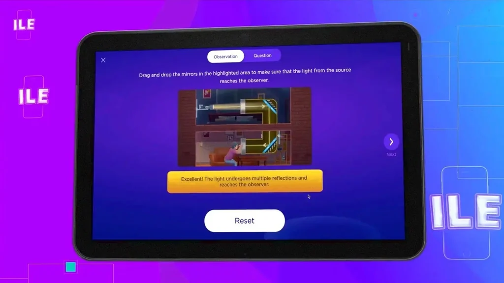

Four approaches, using the same BYJU’S milestone for a fair comparison. Scroll to reveal or replay each scene. These are direction studies, not final artwork.
Explain the progression from concept structure to an interactive learning experience.

Authentic product imagery with a restrained layered composition.
An abstract knowledge network assembled from nodes and connections.
Real product context alongside a conceptual knowledge network.